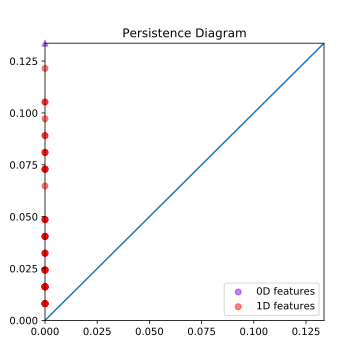

Basic Persistent Homology with JavaPlex
Elliot Yu
April 19, 2017
Introduction
JavaPlex
JavaPlex is a software package developed by the Computational Topology Workgroup at Stanford University. It implements some algorithms that compute persistent homology, and is based on java.
It has the benefit of being efficient and multi-platform. It can be easily accessed from Matlab and java-based systems.
The project page is here: https://appliedtopology.github.io/javaplex/.
Computational techniques
Landmark points
First, instead of constructing a persistence module on the entire data set \(Z\), a small number of points are selected to represent the structure of the data set. These are called the landmark points, denoted \(L = \{l_0, l_1, \dots, l_n\}\).
There are two ways of selecting them, randomly, or inductively by the maxmin of distances.
Specifically, the second method is:
- \(l_0\) is chosen randomly.
- When \(k\) landmark points are already chosen, chose the point \(z\in Z\) to be \(l_{k+1}\) if \(\min_{i = 0, \dots, k} \{d(z, l_i) \}\) is maximal.
Witness stream complex
The witness stream complex \(W(Z, L, t)\) is indexed by a discrete parameter \(t\), taking values in a chosen range.
Let \(m_k(z)\) be the distance from a point in \(Z\) to its \(k+1\)-th closest landmark point.
The vertex set of \(W(Z, L, t)\) is \(L\).
For \(k > 0\) and vertices \(l_i\), the \(k\)-simplex \([l_0 l_1 \dots l_k]\) is in \(W(Z, L, t)\) if all of its faces are, and if there exists a witness point \(z\in Z\) such that
\[
\max\left\{ d(l_0, z), d(l_1, z), \dots, d(l_k, z) \right\} \leq t + m_k (z) \>.
\]
Homology over fields
Another way of speeding up computation is to calculate homology with coefficients in a field (e.g. \(\mathbb Z/p\mathbb Z\) for a prime \(p\), or \(\mathbb Q\)) instead of \(\mathbb Z\).
That will allow us to use standard linear algebra techniques and simply count the ranks of boundary operators, instead of computing the Smith normal form.
A corollary of the universal coefficient theorem
(Corollary 3A.6 of Algebraic Topology by Allen Hatcher:)
(a) \(H_n(X; \mathbb Q) \simeq H_n(X;\mathbb Z) \otimes \mathbb Q\), so when \(H_n(X; \mathbb Z)\) is finitely generated, the dimension of \(H_n(X;\mathbb Q)\) as a vector space over \(\mathbb Q\) equals the rank of \(H_n(X;\mathbb Z)\).
(b) If \(H_n(X; \mathbb Z)\) and \(H_{n-1}(X;\mathbb Z)\) are finitely generated, then for \(p\) prime, \(H_n(X;\mathbb Z_p)\) consists of
i. a \(\mathbb Z_p\) summand for each \(\mathbb Z\) summand of \(H_n(X; \mathbb Z)\),
ii. a \(\mathbb Z_p\) summand for each \(\mathbb Z_{p^k}\) summand in \(H_n(X;\mathbb Z)\), \(k\geq 1\),
iii. a \(\mathbb Z_p\) summand for each \(\mathbb Z_{p^k}\) summand in \(H_{n-1}(X;\mathbb Z)\), \(k\geq 1\).
Example: \(\mathbb RP^2\)
We know that
\[ H_i(\mathbb RP^2; \mathbb Z) = \begin{cases} \mathbb Z & i = 1 \\ \mathbb Z_2 & i = 1 \\ 0 & i \geq 2 \end{cases} \>. \]
Using the corollary, we can calculate the homology groups over \(\mathbb Z_p\),
\[ H_i(\mathbb RP^2; \mathbb Z_p) = \begin{cases} \mathbb Z_p & i = 1 \\ \mathbb Z_p & i = 1, p = 2 \\ 0 & i = 1, p \neq 2 \\ 0 & i \geq 2 \end{cases} \>. \]
Calculations
Javaplex library
To use the library, first download the latest .jar file from https://github.com/appliedtopology/javaplex/releases/.
A somewhat simplified interface is available for Matlab, with examples and a tutorial for it.
Otherwise, the java interface can be accessed through jython, Mathematica, or other systems that support loading java libraries.
Some scripts to make code run
I have also written a few scripts that somewhat simplified the procedure. Download them at https://github.com/Elliot2560/BasicPersistentHomology by running
git clone https://github.com/Elliot2560/BasicPersistentHomologyor just downloading the zip.
It includes a java program that computes the persistence homology, and a python program that plots diagrams from the result.
Running with Eclipse
- Use
File > Open Projects from File Systemto import the directoryBasicPersistentHomology/java. - Go to
File > Properties > Java Build Path, select theLibrariestab. - Use
Add External JARsto add thejavaplex-4.2.5.jarlibrary file. - Open the
Main.javafile, run by clicking onRun > Run, or hitCtrl+F11.
Running with Intellij IDEA
- Use
File > New > Project from Existing Sourcesto open the directoryBasicPersistentHomology/java. - Keep hitting
Nextuntil a new project is created. - Go to
File > Project Structure > Modules. - On the
Dependenciestab, click on the “+” button, use the first option to add thejavaplex-4.2.5.jarfile. - Open the
Main.javafile, run by right clicking and selectingRun 'Main.main()', or hitCtrl+Shift+F10.
Directly compiling and running
In a terminal,
- Go to the
BasicPersistentHomology/javadirectory. Compile:
(edit> javac -classpath /dir/to/javaplex-4.2.5.jar Main.java/dir/to/javaplex-4.2.5.jarto the actual file path of the library).Run:
> java -classpath .:/dir/to/javaplex-4.2.5.jar Main
Input
The input is a text file containing the coordinates of points in the dataset.
Each line of the input file represents a point. The coordinates are separated by commas. Every point should have the same dimension.
For example:
5.1,3.5,1.4,0.2
4.9,3.0,1.4,0.2
4.7,3.2,1.3,0.2
4.6,3.1,1.5,0.2
...Parameters
| Parameters | Description |
|---|---|
String inputFile |
Full file url of the input file. |
String outputFile |
Full file url of the output file |
int characteristic |
Characteristic of the coefficient field. |
int numLandmarkPoints |
Number of points sampled from the data set. |
int maxDimension |
The maximum dimension for which the persistence homology is computed |
double filtrationRatio |
Determines the maximum filtration index used to generate the witness complex. |
int numDivisions |
Number of steps to take when generating the complex. |
Plotting diagrams
The python program plot_persistence.py can visualize the output of the program by plotting the barcode and persistence diagrams. Matplotlib and python3 are required to run it.
Under Windows, execute the following in command line
> py -3 plot_persistence.py [arguments]Under macOS and Linux, run
> python3 plot_persistence.py [arguments]Use the -h or --help option to see the help message for the program.
Results
Persistence intervals
The output of the program looks like,
Dimension: 0
[0.0, 0.007937253933193769)
...
[0.0, infinity)
...
Dimension: 1
[0.0, 0.015874507866387538)
...
Dimension: 2
[0.07143528539874391, 0.07937253933193769)
...Each of the interval represents the birth and life “time” of a “feature” (a homology class) in the persistence module.
Barcode diagrams and persistence diagrams
The persistence intervals can be represented directly as barcodes, or as persistence diagrams. In persistence diagrams, the horizontal axis is the birth time of a feature, and the vertical axis is the death time of a feature.
As an example, the following are the barcode and persistence diagrams of a torus:


Projective plane
We can use JavaPlex to calculate the persistence homology of \(\mathbb RP^2\) over different fields and see what kind of torsions are present in the homology groups.
Recall that the one dimensional homology groups are different over \(\mathbb Z/p\mathbb Z\) for different \(p\). When \(p = 2\), the homology group is \(\mathbb Z/2\mathbb Z\), otherwise it is \(0\).
Persistence homology of projective plane over \(\mathbb Z/2\mathbb Z\)
Persistence homology of projective plane over \(\mathbb Z/3\mathbb Z\)

Persistence homology of projective plane over \(\mathbb Z/5\mathbb Z\)

Iris data set
Iris data set is a classic data set used to verify an algorithm’s pattern recognition capability. Each data point is a set of four real numbers, and there are four clusters of points.
Persistent homology can identify the connected components of the data set.